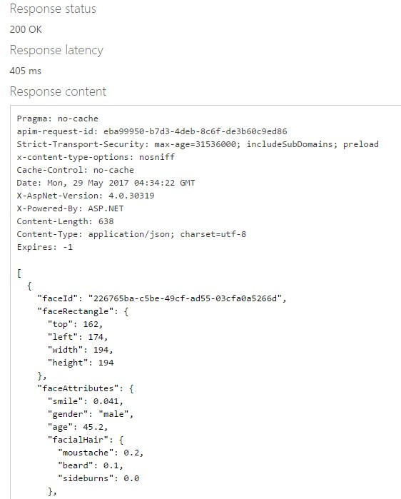
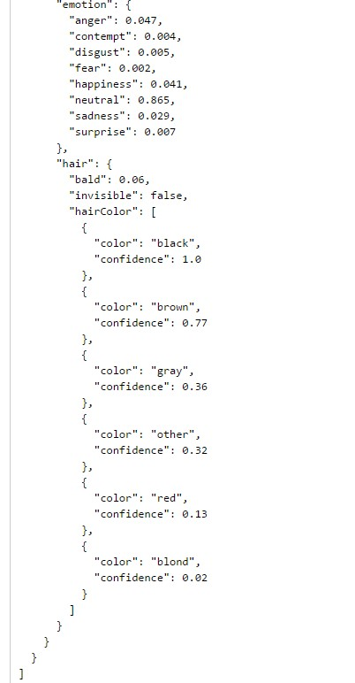

Face API
While the Computer Vision API can provide essential data about faces in images, such as age, gender, and face dimensions in the image, the Face API can be used to provide more detailed data. Below is an example of Face API implementation.
Image being used for this example:

FACE API: POST request
1. Request URL - https://[location].api.cognitive.microsoft.com/face/v1.0/detect[?returnFaceId][&returnFaceLandmarks][&returnFaceAttributes]
2. Request Parameters
- returnFaceId (optional): boolean: Return faceID of detected faces or not
- returnFaceLandmarks (optional): boolean: return face landmarks of faces or not
Ex: dimensions of pupil, mouth, eyebrow, etc. - returnFaceAttributes (optional): string: analyze and return the specified face attributes
Options: age, gender, headPos, smile, facialHair, glasses, emotion, hair, makeup, occlusion, accessories, blur, exposure and noise
3. Request Headers
- Content-Type (optional): Type of media being sent - Ex: application/json
- Ocp-Apim-Subscription-Key: (Your unique subscription key)
4. Request Body - URL or raw image binary to be analyzed by the API
Ex: {"url": "http://www.lolitas.se/wp-content/uploads/2009/03/text5.jpg"}
Example of a complete POST request
A successful REST response will look like this:

